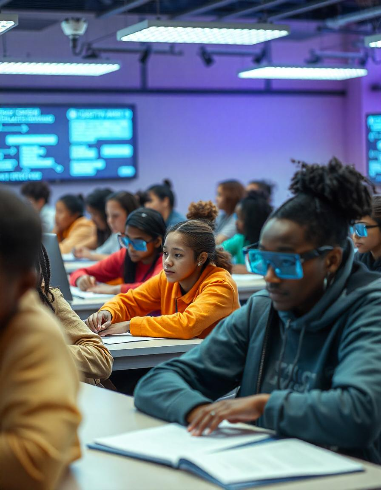

As education evolves, exams and practicums are becoming more dynamic tools for preparing students for real-world challenges. Their future potential lies in blending traditional and innovative approaches to assessment.
Photo: Designed by Freepik
of the future may move beyond pen-and-paper or multiple-choice formats. With advancements in AI and technology, personalized and adaptive exams could assess individual learning paths, focusing on both strengths and areas for growth. These exams might even incorporate interactive elements, such as virtual reality scenarios or gamified questions, to make testing more engaging.
Photo: Designed by Freepik
Practicums are also poised for transformation. Fields like IT, healthcare, and engineering already benefit from simulations and hands-on tasks. In the future, immersive technologies like augmented reality (AR) and virtual reality (VR) could simulate complex real-world environments. Students could practice surgery, manage a smart city, or troubleshoot advanced machinery—all in a safe, controlled setting.
This evolution ensures that exams and practicums aren’t just about passing but about equipping students with the skills to innovate, adapt, and thrive in a fast-changing world. Together, they’ll play a vital role in shaping future-ready professionals.